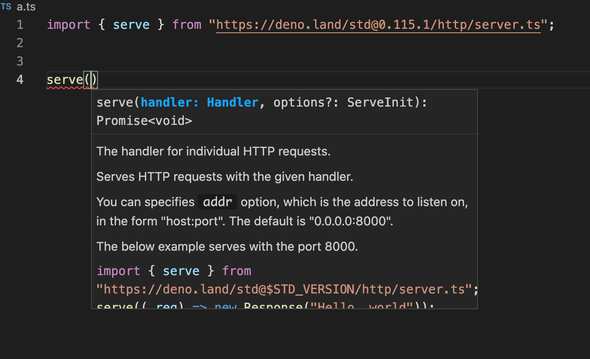
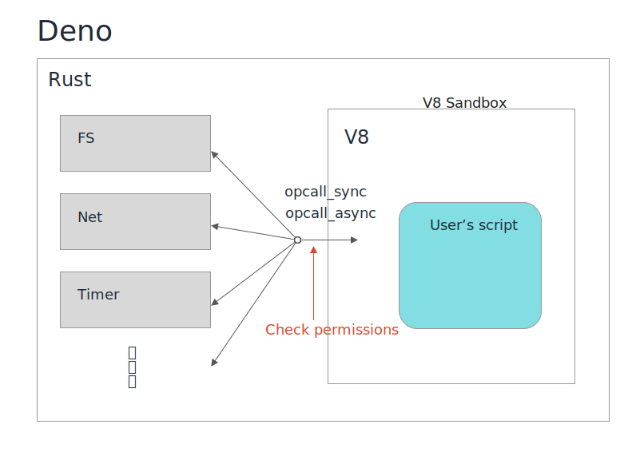

class: middle, center <img src="./assets/logo.svg" align="center" width="200" /> モダンな JavaScript/TypeScript 実行環境 Deno --- class: middle, center 「Deno」 聞いたことありますか? 🙋♀️ 🙋♂️ --- class: middle, center 「Deno」 使ったことありますか? 🙋♀️ 🙋♂️ --- class: middle, center 今日は Deno を 「聞いた事ない」 ~ 「触った事はある」 ぐらいの人向けの話をします --- # 話す人 <img src="./assets/hinosawa.jpg" align="right" width="300" /> 日野澤歓也 twitter @kt3k Web 開発者 - GREE (2012 - 2014) - Recruit (2015 - 2019) - Deno Land (2021 -) <small>2018年から Deno にコントリビュートを開始。2020年作者に誘われ Deno Land に転職。現在はフルタイムで Deno と Deno Deploy を開発中。</small> --- 本日のアジェンダ - Deno とは - Deno の特徴 おまけ - 自分が Deno 社に入社した経緯と入社後の話 --- class: middle center Deno とは --- class: inverse middle center 今から3年半前 --- class: inverse middle center とあるカンファレンス --- class: jsconfeu2018 JSConf EU 2018 --- 「Node.js について後悔している10の事」 - Node.js の作者 Ryan Dahl が Node.js の現状のデザインについて、今の視点からみて後悔している事を発表 - それを克服する新しい処理系として Deno プロジェクトを提案 <p style="text-align: center"> <img src="assets/jsconfeu2018-2.jpg" width="400" /> </p> --- Node.js のおさらい - サーバーサイド JavaScript - V8 エンジンベース - 2009年に開発開始 - C10K 問題への解としてサーバーサイドで流行 -- - フロントエンド開発の基盤にもなった -- - Electron などのデスクトップアプリの基盤 (Slack, VSCode) -- - React Native などモバイルアプリ機能も充実 -- => あらゆる場面で活用される巨大プラットフォーム --- Node.js 7つの後悔 - 後悔1: Promise を使わなかった - 後悔2: Security Sandbox を活用しなかった - 後悔3: GYP を使い続けてしまった - 後悔4: package.json - 後悔5: node_modules - 後悔6: モジュール解決時の拡張子省略 - 後悔7: index.js -- Node.js の「あたりまえ」を否定 --- 対案としての Deno 、そのゴール 1. セキュリティの強化 2. ES Module だけを使う 3. TypeScript ビルトイン 4. 単体の実行ファイルで動く 5. モダンな開発環境を使う 6. 可能な限りブラウザ互換にする などの目標が掲げられた --- class: middle center Deno とは -- "改良版" Node.js --- class: middle center --- class: middle center Deno の特徴 --- Deno の特徴 - ブラウザ互換性 - TypeScript サポート - サンドボックスセキュリティ - ビルトイン開発ツール --- class: inverse middle center ブラウザ互換性 --- ブラウザ互換性 - Deno には可能な限りブラウザ互換 API を取り入れるというデザイン方針がある - Node の開発が始まった時に比べてかなり多くのブラウザ API が定義されていて、いろいろな事がブラウザと同じ API で出来るようになっている -- - <small>ただし、Node.js も可能な場合は後からブラウザ互換 API を取り入れるという流れがあり、ややこしい状態になっている</small> - 例. url と URL、Buffer extends Uint8Array --- Deno に実装されている ブラウザ互換API の例 `fetch` API ```ts const resp = await fetch("https://example.com"); const html = await resp.text(); console.log(html); ``` -- - 簡単に HTTP リクエストが出来る - http client library などが不要 --- Deno に実装されている ブラウザ互換API の例 バイナリ処理 - TypedArray API (Uint8Array, etc) ```ts const data = Uint8Array.from([0x66, 0x6f, 0x6f]); const text = new TextDecoder().decode(data); // => foo ``` -- - <small>Node の場合は `Buffer` (独自クラス)</small> - <small>ただし今は Node は TypedArray も持っている</small> --- Deno に実装されている ブラウザ互換API の例 URL パーサー ```ts const url = new URL("https://example.com/?foo=bar"); console.log(url.hostname); // => example.com console.log(url.searchParams.get("foo")); // => bar ``` -- - <small>Node の場合は require("url") が昔からあるが、後に URL も実装されて両方ある状態</small> --- Deno に実装されている ブラウザ互換API の例 Web Storage ```ts localStorage.setItem("key", data); ... // プログラム再起動後 console.log(localStorage.getItem("key")); // => さっき保存したデータが残っている ``` -- - エントリポイント毎に独立したストレージを持てる - 内部では SQLite を使って保存している -- - <small>Node には無い機能</small> --- Deno に実装されている ブラウザ互換API の例 HTTP imports ```ts import { serve } from "https://deno.land/std@0.126.0/http/server.ts"; serve((_req) => new Response("Hello, world")); ``` -- - URL 指定でモジュールを取得できる。 - この機能があるため Deno では `package.json` や `node_modules` が不要になっている -- - <small>Node でも最近実験的な実装が始まったが物議を醸している</small> --- Deno に実装されているブラウザAPI の例 - PubSub - EventTarget API - ストリーミング処理 - Web Stream API - 暗号 - Web Crypto API - GPU - WebGPU - http server - Request, Response API 参考: [A list of every web API in Deno](https://deno.com/blog/every-web-api-in-deno) --- ブラウザ互換 API の良いところ - ブラウザと共通して使えるコードを書ける - ブラウザ API はとてもきちんと定義されている - 議論の質が高い - 仕様書の質が高い - 自動テストがある - 仕様策定プロセスがあるため、簡単に変わることはない -- => 安心して使える --- ブラウザ互換性 - 最近の進捗 - WPT - 2021年1月 Web Platform テストを CI に導入 - Web Platform Test = ブラウザが共通で通している Web API のテストスイート - コミット毎に Web 互換性をチェックしています <p class="text-align: center"> <a href="https://wpt.fyi/results/?label=master&product=chrome%5Bexperimental%5D&product=edge%5Bexperimental%5D&product=firefox%5Bexperimental%5D&product=safari%5Bexperimental%5D&product=deno&aligned"> <img src="./assets/wpt.png" align="center" width="600" /></a> </p> --- Web 互換性 - 最近の進捗 - MDN - 2021年8月 MDN への掲載が始まる <p class="text-align: center"> <img src="./assets/mdn.png" width="600" /> </p> --- class: inverse middle center TypeScript サポート --- TypeScript サポート - TypeScript をそのまま実行できる ```ts // sample.ts const res = await fetch("https://example.com") console.log(res.body.text); ``` -- ``` $ deno run sample.ts Check file:///Users/kt3k/sample.ts error: TS2531 [ERROR]: Object is possibly 'null'. console.log(res.body.text); ~~~~~~~~ ``` ↑ 実行時エラーではなく型エラー --- TypeScript サポート `deno lsp` - Language Server Protocol でエディタと通信して、Deno 固有な型情報の補完が出来るように <p class="text-align: center"> <img src="./assets/deno-vscode.png" width="600" /> </p> --- TypeScript サポート `deno lsp` - ネットワーク越しの TypeScript も型補完が可能 <p class="text-align: center">  </p> --- TypeScript サポート 補足 - <small>なお、ベストプラクティスと考えられている設定がデフォルトで入っているので、設定無しで TypeScript を使い始められます。</small> - <small>デフォルトから外れたい場合は、自分でコンパイラオプションを書くこともできます。</small> -- => <small>TypeScript を使うための敷居が Node.js に比べてかなり低い(はず)</small> --- class: inverse middle center サンドボックスセキュリティ --- サンドボックスセキュリティ 前提の話 - Deno は内部的に V8 エンジンを使っている。 - V8 は「信用できないコード」を動かす事を前提に設計されているため、サンドボックス化されている - => V8 の外に影響を及ぼせないようになっている --- サンドボックスセキュリティ <p class="text-align: center">  </p> --- サンドボックスセキュリティ - V8 Sandbox から出て runtime の機能を使う際に opcallSync / opcallAsync という関数を必ず通るデザインになっている - その際に使おうとしてる機能に即したパーミッションを持っているかどうかをチェックする --- サンドボックスセキュリティ - 7種類のパーミッションがあり、コマンドライン引数で渡す - `--allow-read` ファイル読み取り - `--allow-write` ファイル書き込み - `--allow-net` ネットワーク - `--allow-env` 環境変数読み取り - `--allow-run` プロセス実行 - `--allow-ffi` ネイティブ拡張の使用を許可 - `--allow-hrtime` 高精度タイマーの使用を許可 --- サンドボックスセキュリティ ファイルの読み取りを許可する場合 (全部許可) ``` deno run --allow-read program.ts ``` カレントディレクトリのみ読み込み許可 ``` deno run --allow-read=. program.ts ``` --- サンドボックスセキュリティ ファイルの書き込みを許可する場合 (全部許可) ``` deno run --allow-write program.ts ``` `dist/` ディレクトリのみ書き込み許可 ``` deno run --allow-write=dist/ program.ts ``` --- サンドボックスセキュリティ <small>ネットワークアクセスを許可する場合 (全部許可)</small> ``` deno run --allow-net program.ts ``` <small>特定のドメイン・ポートのみネットワークアクセス許可</small> ``` deno run --allow-net=example.com:80 program.ts ``` -- <small>=> 意図しない攻撃コード混入時などに被害を防ぐ事が出来る</small> --- サンドボックスセキュリティ その他のパーミッション - `--allow-env` 環境変数の使用許可 - `--allow-run` 別プロセス実行の使用許可 - `--allow-ffi` 外部ネイティブ拡張使用許可 (Deno のセキュリティモデルを無視したコードが実行されるため、使用注意) - `--allow-hrtimes` 高精度タイマー使用許可・スペクター対策 (基本許可しない) - `--allow-all, -A` 全部許可、開発時などに利用 --- サンドボックスセキュリティ余談 - ところで、npm では恒常的にセキュリティインシデントが起きている - その大部分は、Deno の場合はセキュリティフラグを正しく使う事で回避出来る - Node.js に今からこの機能を入れる事は現実的ではない - Deno が Node.js を本質的に"改善"している機能と言える --- class: middle center inverse ビルトイン開発ツール --- 最近の Node.js 開発の始め方 -- - TypeScript のインストール -- - ESLint のインストール -- - Prettier のインストール -- - Jest のインストール -- - テストカバレッジツールのインストール 😩 -- - バンドラーのインストール 😫 -- => <small>最初からインストールしないといけないものが多い!</small> -- => <small>しかも時間が経つと「それはもう古い」になりがち!</small> --- Deno のビルトイン開発ツール - 開発時に常識的に必要になる機能は本体にビルトインされている --- Deno のビルトイン開発ツール - 例 -- - コードのフォーマット => `deno fmt` -- - コードのリント => `deno lint` -- - ユニットテストの実行 => `deno test` -- - テストカバレッジ => `deno coverage` -- - スクリプトのバンドル => `deno bundle` -- - TypeScript => 本体に内包 -- => Deno 本体さえあれば、開発に必要なツールが一通り揃っている! --- class: middle center Deno のユニークなデザインは<br />一定の評価を受けつつある --- Deno の採用例 - GitHub 次世代 Data Access API <p style="text-align: center"> <a href="https://next.github.com/projects/flat-data"> <img src="./assets/flat-data.png" width="750" /> </a> </p> --- Deno の採用例 - Slack <p style="text-align: center"> <a href="https://deno.com/blog/slack"> <img src="./assets/slack-deno.png" width="600" /> </a> </p> --- Deno の採用例 - Slack - Slack の新しい SDK は Deno ベース - この件以降、各種スタートアップから Deno 社への問い合わせがかなり増えている --- まとめ - Deno は "改良版" Node.js を目指すプロジェクト - Deno は Web 互換性、セキュリティ、TypeScript サポート、ビルトイン開発ツールなどが特徴的でそれらの機能はかなり充実・安定してきている - Deno は GitHub、Slack などから採用が始まっている --- class: middle, center おまけ Deno 社に入社するまでと入社してからの話 --- 入社するまでのコントリビューション 2018 - 2020 - 純粋に技術的に面白そうという理由で開発に参加 - この時点では会社は存在していなかった - 外部コントリビュータとしては 3 番目ぐらいに contribute していた <p style="text-align: center"> <a href="https://youtu.be/1gIiZfSbEAE?t=1794" target="_blank"> </a> </p> --- 2020年中盤 Deno Land Inc. 設立 - US の登記情報のようなサイトが検索で引っかかる - Node.js contributor の一人が Deno Land Inc. に入ると issue 上でコメント - ただし公式アナウンスは無し --- メール - 2020/10 作者ライアン・ダールから「ちょっと個人的に話さない?」という内容のメールがくる。 - この時点ではライアン・ダールと個人的な連絡を取った経験はなし。PR 上でのやり取りのみの関係。 --- 面接 - Meet で会ってみると、Deno の会社をやっている。Deno で働かないか、という話だった - 面白そうと思ったのでその場でオファーを承諾。その後 CTO とも面談し、2021/1 から稼働開始 --- 入社後 - まず、個人にタスクをアサインする事はないと告げられる。 - 各人が Deno にとって良いと思った事をする。 - と言っても、自分が得意な分野には限りがあるため、バリューが出せそうな領域を見つけて取り組む - 取り組むタスク探しはいつも難しい問題 --- Deno での1年の振り返り - 初めての英語環境での就業 - 初めての仕事としての OSS 開発 - 世界レベルで有名な人との協業 -- => ものすごく挑戦があり、ほぼ良いことづくめの環境 -- => ただし周りが非常に優秀なためプレッシャーもある --- class: middle center <small>Findy Engineer Lab にインタビュー記事が出ました!</small> <p style="text-align: center"> <a href="https://engineer-lab.findy-code.io/deno-kt3k" target="_blank"> </a> </p> <small>もう少し詳しい入社前後の経緯が載っています</small> --- class: middle center <img src="./assets/logo.svg" align="center" width="200" /> End